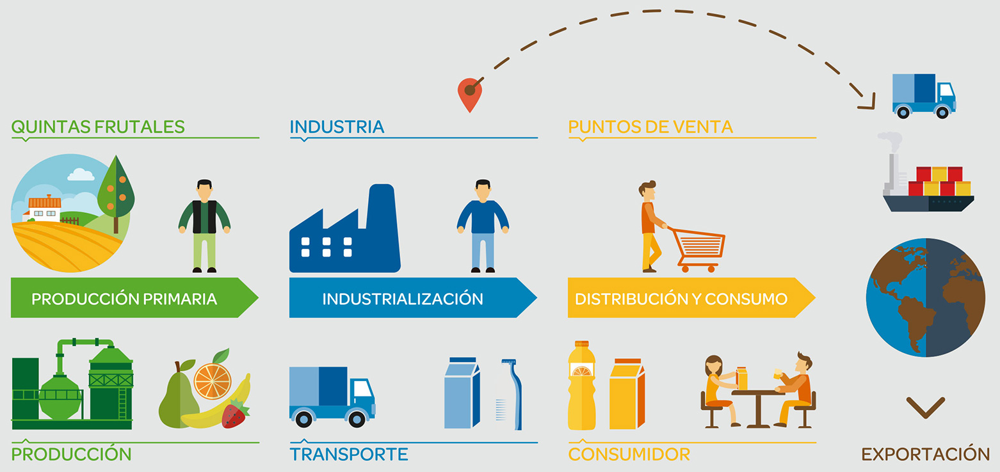
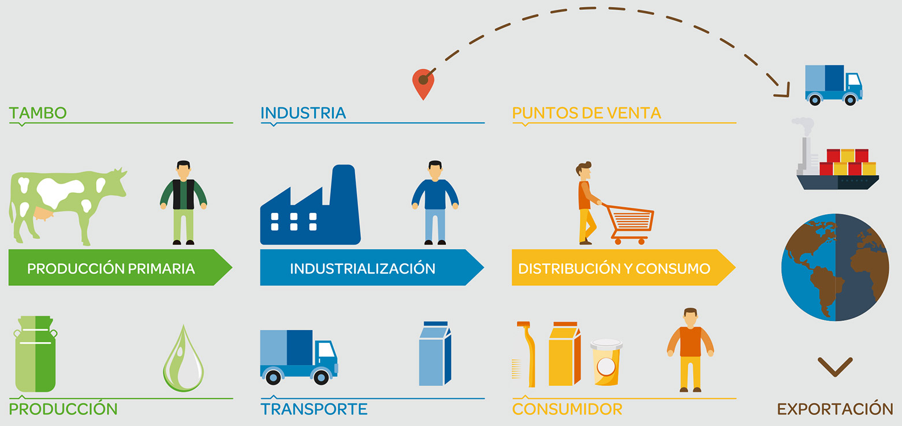

¿Donde, como y para quienes producimos?
Entre Ríos, capital de los cítricos:
Entre Ríos cuenta con una gran extensión de plantaciones de citrus, siendo la provincia con mayor producción y exportación de frutas cítricas. Por eso allí, más precisamente en la ciudad de Gualeguaychú, RPB S.A. localizó en 1983 su primera planta productiva. Esta planta cuenta actualmente con 75.000 metros cuadrados cubiertos dedicados a la elaboración de jugos de fruta, aguas saborizadas, aguas de mesa, gaseosas, sodas, leche chocolatada y diversos productos lácteos. En la ciudad de Concordia, en la misma provincia, está emplazada nuestra planta procesadora de frutas y envasadora de jugos.
Mendoza, tierra de viñedos, olivares y fincas:
Mendoza, cuna del Malbec, es la principal provincia vitivinícola de la Argentina y una de las Grandes Capitales Mundiales del Vino. Allí se encuentran radicadas las bodegas donde se elaboran las diferentes líneas de vinos de nuestra Bodega RPB: "Viejo Viñedo" (ubicada en Coquimbito), "Uvita" (ubicada en Maipú) y "Chapanay" (localizada en San Martín). Parte de la producción de uvas proviene de fincas propias, radicadas en las mejores zonas de cultivo que ofrece esta región. Ademas de vino, Bodega RPB elabora aceite de oliva extra virgen de exportación. En la misma provincia, en la zona de San Martín, se encuentra radicada nuestra finca "Don Ambrosio", donde plantamos, cuidamos, cosechamos y procesamos tomates con los que elaboramos nuestros purés de tomates. Y en San Rafael se encuentran nuestras quintas de duraznos y se emplaza nuestra planta procesadora de frutas para el envasado de dulces y mermeladas.
Distribución en todo el país:
Contamos con 10 centros de distribución con los que cubrimos todos los puntos de entrega del país, para así llegar a todas las familias argentinas.
Exportaciones a más de 72 países:
El desarrollo de nuevos mercados en el mundo ha logrado posicionar algunas de nuestras marcas en más de 72 países. El Departamento de Comercio Exterior mantiene una dinámica muy activa en la construcción de estrategias comerciales apuntadas a satisfacer, con nuestros productos, necesidades de consumidores en gran parte del mundo, desde América hasta Europa, Australia, África y Asia
 